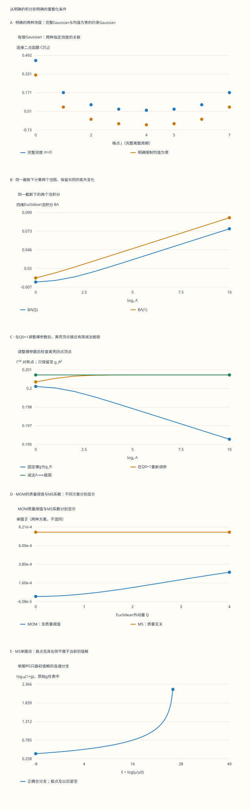

本页目录
场论 III · 路径积分与重整化
前置：正则量子化、Wick缩并与费曼图、矩阵消元、单变量积分。读完这一课，应能算出一个有源Gaussian积分，说明积掉变量后哪些量改变，并从一个实际泡图积分得到有限的重整化条件。有限格点是精确模型；四维φ⁴计算只保留到单圈，二者的结论范围分别标明。
1. 为什么从一个有限积分开始
“对所有场历史求和”给出了方向，但还没有规定积分是否存在、边界条件是什么、关联函数如何归一化。先用周期环上的 \(N\) 个实变量 \(\phi_j\) 做一个可以完整算完的版本。取格距与 \(k_BT\) 为1，\(j+N=j\)，定义
这里 \(m^2\) 惩罚场的整体幅度，\(\kappa>0\) 惩罚相邻格点的差异，\(J\) 是用来探测响应的外源。\(K\) 的对角元为 \(m^2+2\kappa\)，两侧近邻元为 \(-\kappa\)。实验保留所有格点、全部矩阵元和全部Fourier求和项，没有把图上看不清的贡献删掉。
有限Euclidean积分 \(Z[J]=\int_{\mathbb R^N}d^N\phi\,e^{-S_E(\phi;J)}\) 在 \(m>0\) 时确实存在。连续场论的Minkowski路径积分则涉及振荡积分、真空边界条件与 \(i\epsilon\) 处方。Wick旋转需要相应的解析性与收敛条件；这个有限正定模型本身不能证明任意场论都能直接旋转成概率分布。
2. 完成平方，归一化也一起算出来
令 \(C=K^{-1}\)、\(\bar\phi=CJ\)。把 \(\phi=\bar\phi+\eta\) 代回，交叉项因 \(K\bar\phi=J\) 消失，得到 \(S_E=\tfrac12\eta^TK\eta-\tfrac12J^TCJ\)。正交对角化 \(K\)，每个方向给出一个普通Gaussian积分，因此
不带源的归一化与带源的比值解决不同问题。只写指数，会丢失自由能中的行列式；只看很大的 \(Z[J]/Z[0]\)，又容易把指数放大后的舍入误差看成基本公式错误。实验同时显示 \(\log Z[0]\)、\(\log(Z[J]/Z[0])\)、完整 \(\log Z[J]\) 和指数比值。
周期Fourier模给出 \(\lambda_k=m^2+4\kappa\sin^2(\pi k/N)\)，\(k=0,\ldots,N-1\)。协方差是 \(C_{ij}=N^{-1}\sum_k\cos[2\pi k(i-j)/N]/\lambda_k\)。这里列出全部 \(N\) 个复Fourier标签；它们表达的是原来 \(N\) 个实自由度的实矩阵，不是凭空多出一倍独立场变量。
3. 对源求导：矩、连接关联与有效作用量
由积分定义，\(\partial Z/\partial J_i=Z\langle\phi_i\rangle\)。因此 \(\partial\log Z/\partial J_i=(CJ)_i\)，二阶导数是连接二点函数 \(C_{ij}=\langle\phi_i\phi_j\rangle-\langle\phi_i\rangle\langle\phi_j\rangle\)。\(\log Z\) 对源只有二次项，所以三阶及更高的连接累积量为零。
这不表示普通四点矩为零。有源Gaussian的四点矩包括一个“四个均值的乘积”、六个“一个协方差乘两个均值”、三个“两对协方差的乘积”。实验选取四个明确的格点，把这十项逐条列出。零源时才只剩三种完全配对，这与上一课的Wick定理一致。
令 \(W[J]=\log Z[J]\)，并在正定情形作Legendre变换 \(\Gamma[\bar\phi]=J^T\bar\phi-W[J]\)。由于 \(J=K\bar\phi\)，得到 \(\Gamma=\tfrac12\bar\phi^TK\bar\phi-\log Z[0]\)，其Hessian为 \(K=C^{-1}\)。在相互作用场论中，\(\Gamma\) 的导数组织1PI顶点；普通关联函数、连接关联函数和1PI顶点不是同一对象。
4. 零模：源的平均值为零仍不够
当 \(m=0\) 时，常数向量是 \(K\) 的零模。把 \(\phi_j=c+\eta_j\)、\(\sum_j\eta_j=0\) 代入：梯度项与 \(c\) 无关。若 \(\sum_jJ_j=0\)，零模积分仍是 \(\int_{\mathbb R}dc\)，所以完整积分没有有限归一化。若源总和非零，指数沿一个方向增长，同样不是可归一化的Gaussian。
一个明确的替代模型是额外规定场均值为零。使用该 \((N-1)\) 维子空间上的Euclidean体积测度，协方差为 \(C_\perp=N^{-1}\sum_{k=1}^{N-1}e^{2\pi ik(i-j)/N}/\lambda_k\)，源先投影为 \(J_\perp=J-\bar J\mathbf1\)。此时 \(KC_\perp=I-\mathbf1\mathbf1^T/N\)，归一化为 \((2\pi)^{(N-1)/2}/\sqrt{\prod_{k=1}^{N-1}\lambda_k}\)。
这条子空间公式在 \(m>0\) 时也定义了一个受约束模型，和未约束模型通常不同。实验分别画两种关联；完整测度不存在时留空，不用伪逆悄悄替代原问题。均匀源在受约束空间内没有作用，但这不能反过来修复完整测度的零模。
5. 积掉奇数格点：一次完整的精确消元
将偶数格点记为 \(\phi_l\)，奇数格点记为 \(\phi_h\)，按此顺序分块 \(K\)。固定 \(\phi_l\) 后，奇数格点的条件均值为 \(K_{hh}^{-1}(J_h-K_{hl}\phi_l)\)，条件协方差为 \(K_{hh}^{-1}\)。对它们完成平方并积分，得到
剩下的积分是 \(Z[J]=A_h\int d^{N/2}\phi_l\exp[-\tfrac12\phi_l^TK_{\rm eff}\phi_l+J_{\rm eff}^T\phi_l]\)。直接删去奇数行列只留下 \(K_{ll}\)，相当于把那些变量固定为零，算的是另一件事。正定时还可检查 \((K^{-1})_{ll}=K_{\rm eff}^{-1}\) 和 \(\det K=\det K_{hh}\det K_{\rm eff}\)。
这个偶数周期环有 \(K_{hh}=(m^2+2\kappa)I\)。消元后仍能写成粗格点环，其 \(\kappa_{\rm eff}=\kappa^2/(m^2+2\kappa)\)、\(m_{\rm eff}^2=m^2(m^2+4\kappa)/(m^2+2\kappa)\)。当 \(N=4\) 时，剩下两个点之间有原周期环继承的两条边，不能只算一条。实验逐项比较Schur补与这条解析粗格点公式。
当 \(m=0\) 时，\(K_{hh}\) 仍可逆，因此条件积分这一步成立；剩下的整体零模仍在，不能据此宣称完整 \(Z\) 有限。这里也还没有做长度、场幅和能标的重标度；一次格点消元不是完整的Wilson重整化群流程。
6. 从Gaussian到相互作用：明确算的是什么
现在转向另一模型：四维Euclidean实标量场，作用量含 \(g\phi^4/4!\)，质量 \(m\ge0\)，耦合 \(g\ge0\)。形式上可展开相互作用指数，并对自由Gaussian求矩；上一课已经说明，有限阶微扰近似不等于无穷级数收敛。
本页计算的是对称离壳动量点的四点1PI顶点。可取四个入射Euclidean动量分别为 \((a,a,a,0)\)、\((a,-a,-a,0)\)、\((-a,a,-a,0)\)、\((-a,-a,a,0)\)，\(a=Q/2\)。它们之和为零，\(p_i^2=3Q^2/4\)，不同动量点积为 \(-Q^2/4\)，三种通道的 \((p_i+p_j)^2\) 都等于 \(Q^2\)。
树顶点是 \(g\)。三个单圈通道各带组合系数 \(1/2\)，在这组点上给出 \(\Gamma^{(4)}_{\rm sym}=g_B-\tfrac32g_B^2B_\Lambda(Q)+O(g_B^3)\)。这不是上一课的在壳散射振幅，也没有自动包含从Euclidean顶点到LSZ散射量所需的解析延拓、质量壳和外腿归一化。
7. 实际泡积分：先声明截断处方
两条传播子的分母可用 \(1/(AB)=\int_0^1dx/[xA+(1-x)B]^2\) 合并。平移动量后令 \(\Delta_x=m^2+x(1-x)Q^2\)。本页选择在Feynman参数化与平移后，对新Euclidean动量施加球形截断 \(q^2\le\Lambda^2\)。先对旧动量截球再平移会改变边界；这两种正则化定义不能混写。
四维球面的面积为 \(2\pi^2\)，因此 \(d^4q/(2\pi)^4\) 的径向因子是 \(q^3dq/(8\pi^2)\)。令 \(u=q^2\)，把 \(u/(u+\Delta_x)^2\) 积分，得到
这个积分和系数来自明确的四维泡图，而不是预先填好的对数账本。大 \(\Lambda\) 时，共同发散部分为 \(\log\Lambda^2/(16\pi^2)\)，其余部分仍依赖 \(m,Q\)。实验展示原积分、参考点积分、差值和全部自适应子区间。
数值上使用 \(x=(1-\cos\theta)/2\)。当 \(m=0,Q>0\) 时，再解析分离端点对数：设 \(d=x(1-x)Q^2\)，括号可写成 \(\log(\Lambda^2/Q^2)-\log[x(1-x)]-1+\log(1+d/\Lambda^2)+d/(\Lambda^2+d)\)。利用 \(\int_0^1-\log[x(1-x)]dx=2\)，只需数值积最后两个光滑项。自适应Simpson误差是估计，不是经过区间算术证明的严格包围。
8. 减法条件：保留动量依赖，消去共同紫外部分
以 \(Q_0=1\) 作为本页的动量单位和减法点，规定 \(\Gamma^{(4)}_{\rm sym}(1)=g_R\)。在 \(O(g_R^2)\) 上，这要求 \(\delta g_\Lambda=\tfrac32g_R^2B_\Lambda(1)\)，\(g_B=g_R+\delta g_\Lambda\)。代回圈项时必须同时按阶数展开：把 \(g_B^2\) 换成 \(g_R^2\) 的差属于此处省略的 \(O(g_R^3)\)。
于是调参后的顶点为 \(g_R-\tfrac32g_R^2[B_\Lambda(Q)-B_\Lambda(1)]+O(g_R^3)\)。同一处方下取 \(\Lambda\to\infty\)，得到有限减法 \(B_R(Q)=-[16\pi^2]^{-1}\int_0^1dx\log[(m^2+x(1-x)Q^2)/(m^2+x(1-x))]\)。在 \(Q=1\) 处它严格为零；其他动量处仍保留非平凡预测，重整化不是把整条曲线抹成常数。
无质量且 \(Q>0\) 时，\(B_R(Q)=-\log Q^2/(16\pi^2)\)。但无质量的 \(Q=0\) 泡图在低动量端发散，减去 \(Q=1\) 的紫外共同部分并不能消除此红外问题。实验将这个点留空，并把发散原因写进下载记录。
9. MOM与MS：尺度变化的定义也要明确
把对称点动量用作MOM耦合的定义尺度，固定其他重整化输入至本阶，从上一节的有限差求导得到 \(\beta_{\rm MOM}(Q)=3g^2I(Q/m)/(16\pi^2)+O(g^3)\)，其中 \(I=\int_0^1dx\,x(1-x)Q^2/[m^2+x(1-x)Q^2]\)。\(Q\ll m\) 时 \(I=Q^2/(6m^2)+O(Q^4/m^4)\)，\(Q\gg m\) 时趋于1。这是本页定义的质量依赖减法方案的阈值表现。
MS使用不同的定义。取 \(d=4-2\epsilon\)，实标量 \(g\phi^4/4!\) 的单圈裸耦合关系为 \(g_B=\mu^{2\epsilon}[g+3g^2/(32\pi^2\epsilon)+\cdots]\)。对 \(\mu\) 求导时固定 \(g_B\)，并在极点系数的导数里保留 \(\beta=-2\epsilon g+O(g^2)\)，得到 \(\beta_{\rm MS}=-2\epsilon g+3g^2/(16\pi^2)+O(g^3)\)。在四维取 \(\epsilon\to0\)。
MS的这个耦合β是质量无关的。实验并排显示MOM阈值曲线与MS系数，不能把前者的低能减速直接塞进后者而仍称同一方案。改变方案时要匹配参数；离壳顶点与运行参数本身依赖定义，适当匹配后比较的物理量才有方案独立性。
这里的归一化与 \(d=4-2\epsilon\) 反项可核对 FeynCalc 的实φ⁴单圈重整化计算。该资料分别给出质量、场和耦合反项；本实验只追踪耦合部分，不能替代完整多参数重整化。
10. 单圈RG解：极点不是可跨越的绘图点
令 \(\ell=\log(\mu/\mu_0)\)、\(b=3/(16\pi^2)\)。在四维MS单圈近似下，\(dg/d\ell=bg^2\)，初值 \(g(0)=g_0>0\) 的解为 \(g(\ell)=g_0/(1-bg_0\ell)\)，定义在包含0的区间 \(\ell<\ell_*=1/(bg_0)\)。\(g_0=0\) 则始终为零，没有有限极点。
代数式在极点右侧给负值，不意味着正耦合初值解穿过无穷大继续运行。实验把极点准确插入扫描，极点及以后的读数留空，SVG路径也停止。为免大数值把其余变化压扁，图的纵轴使用 \(\log_{10}(1+g)\)，完整的 \(g\)、分母和 \(dg/d\ell\) 留在表中。
在极点之前，微扰也可能早已失去可靠性。表中的 \(g/(16\pi^2)\) 只是一个可查看的圈展开量级指标，不是统一的误差上界。这个单圈解既不是完整理论的非微扰存在性证明，也不能单凭一条极点曲线证明某个高能完成必定采取哪种形式。
11. 从这两次计算走向有效场论
有限Gaussian消元说明：不观测的变量被积分掉后，会改变剩余变量的作用量、源响应和归一化。相互作用理论还会产生更多允许的算符；若要建立Wilson流，还须指定积分哪些模、如何重标度、保留哪些项，以及截断带来什么误差。
在四维，标量的工程维数为1，所以 \(\phi^2\)、\(\phi^4\)、\(\phi^6\) 的系数质量维数分别为2、0、−2。写成 \(c_6\phi^6/M^2\) 后，在适当低能过程里可组织 \(Q/M\) 的展开；“高维算符可忽略”需要相应的尺度分离和系数假设，不能只凭名字决定。对称性会限制允许的算符，重整化处方也须与所需对称性相容。
继续学习时，可把本页接到格点场论、临界现象的Wilson流、有效场论匹配与反常。每条路线都先问清当前对象：是有限测度、离壳关联、运行参数，还是实验可观测量；再检查极限、近似阶数与误差来源。图上的光滑曲线不能替代这些条件。
无脚本对照：五图和六组记录来自同一份固定数据。图A是有限格点，图B–E是四维φ⁴单圈模型；外动量Q是Euclidean对称点变量。

| 预设 | 完整log Z | 消元后log Z | BΛ(Q) | B_R(Q) | MOM阈值因子 | 单圈极点ℓ |
|---|---|---|---|---|---|---|
| gaussian | 3.81756784 | 3.81756784 | 0.0278773596 | 0 | 0.139182118 | 263.189451 |
| massless-uniform | 不适用 | 不适用 | 0.0414560611 | 0 | 1 | 263.189451 |
| threshold | 0.409552873 | 0.409552873 | 0.0726741408 | 0.000254849101 | 0.000416458445 | 263.189451 |
| high-q | 7.57801996 | 7.57801996 | 0.0763421623 | -0.015692809 | 0.970166567 | 263.189451 |
| infrared | 不适用 | 不适用 | 不适用 | 不适用 | 不适用 | 263.189451 |
| pole | 3.81756784 | 3.81756784 | 0.0736787608 | -0.00681399115 | 0.677193294 | 26.3189451 |
下载六组完整记录。记录包含所有矩阵元、Fourier求和项、Schur消元、积分子区间及截断/动量/RG扫描；自适应误差是数值估计，不是严格包围。
12. 练习：把关键判断算出来
1. 四格点、m=κ=1：完整归一化和协方差是多少？
四个本征值为 \(1,3,5,3\)，所以 \(\det K=45\)，\(Z[0]=(2\pi)^2/\sqrt{45}\)。Fourier求和给 \(C_{00}=\tfrac14(1+\tfrac13+\tfrac15+\tfrac13)=7/15\)，\(C_{01}=1/5\)，\(C_{02}=2/15\)。由周期性和对称性得到其余矩阵元。最后乘回 \(KC=I\)，可检验归一化和近邻边的符号。
2. 同一四格点加入均匀J=1/2：四点矩为什么不只有三项？
因为 \(K\mathbf1=\mathbf1\)，四个均值都是 \(1/2\)，且 \(\log(Z[J]/Z[0])=\tfrac12\times4\times(1/2)^2=1/2\)。取四个不同格点，十项分成：均值乘积 \(1/16\)；六个单协方差项合计 \(\tfrac14(4/5+4/15)=4/15\)；三种双配对合计 \(2/25+4/225=22/225\)。普通四点矩为 \(1537/3600\)，而四阶连接累积量仍为0。
3. 积掉奇数格点：验证Schur补与源常数。
仍取上两题参数。\(K_{ll}=3I\)，\(K_{hh}=3I\)，\(K_{lh}\) 的四个元都是−1。于是 \(K_{\rm eff}=\begin{pmatrix}7/3&-2/3\\-2/3&7/3\end{pmatrix}\)，\(\det K_{\rm eff}=5\)，与 \(\det K=9\times5\) 一致。\(J_{\rm eff}=(5/6,5/6)\)，被积掉变量留下的源常数为 \(1/12\)，剩余积分的二次源贡献为 \(5/12\)，总和正好回到 \(1/2\)。只删矩阵行列会错过这些项。
4. m=0、J总和为零时，应该用逆矩阵还是另提一个问题？
完整 \(K\) 没有逆，因为 \(K\mathbf1=0\)。源总和为零只让指数与常数场方向无关，该方向的积分仍无限。若明确加上 \(\sum\phi_j=0\) 约束，才在这个子空间使用 \(C_\perp\)，并检查 \(KC_\perp=P_\perp\) 而不是 \(I\)。例如四格点κ=1的非零本征值为 \(2,4,2\)，受约束归一化为 \((2\pi)^{3/2}/4\)；它不是原完整积分的有限答案。
5. 把一个真正的泡积分算到一维初等积分。
取 \(m=1,Q=0,\Lambda=1\)。此时 \(\Delta_x=1\) 与 \(x\) 无关，所以 \(B_1(0)=[\log2-1/2]/(16\pi^2)\)。也可直接做 \(\int_0^1dq\,q^3/(q^2+1)^2/(8\pi^2)\)：令 \(u=q^2\)，积分 \(u/(u+1)^2\)，得到同一结果。这同时检查了四维球面积、传播子平方与 \(2\pi\) 归一化。
6. 无质量Q=2的有限减法与离壳顶点怎么写？
参考点仍为1。\(B_R(2)=-\log4/(16\pi^2)\)，因此 \(\Gamma^{(4)}_{\rm sym}(2)=g_R+3g_R^2\log4/(32\pi^2)+O(g_R^3)\)。这里 \(Q>0\)，Feynman参数端点对数可积。若把 \(Q\) 改成0，低动量泡积分红外发散，不能把上一式中的 \(\log0\) 填成一个有限数字，也不能用紫外反项消除它。
7. 从d=4−2ε的反项推导β，为什么不能漏掉工程维数项？
记 \(a=3/(32\pi^2)\)，\(g_B=\mu^{2\epsilon}(g+ag^2/\epsilon)\)。固定裸耦合求导得 \(0=2\epsilon g+2ag^2+\beta(1+2ag/\epsilon)+O(g^3)\)。设 \(\beta=-2\epsilon g+\beta_1g^2\)，交叉项提供 \(-4ag^2\)，所以 \(\beta_1=2a=3/(16\pi^2)\)。若过早把 \(\epsilon\) 设为0，会丢掉与极点相乘后的有限项。
8. g0=1的单圈解：在哪里变成2，哪里必须停止？
取 \(b=3/(16\pi^2)\)。令 \(1/(1-b\ell)=2\)，得 \(\ell=8\pi^2/3\)。极点则在 \(\ell_*=16\pi^2/3\)，二者不同。后者以外的负代数值不属于这个初值问题的连通解；接近极点前还须检查微扰是否可靠。作为另一项低能检查，MOM阈值因子在 \(Q\ll m\) 时约为 \(Q^2/(6m^2)\)，它不等于修改了MS单圈系数。